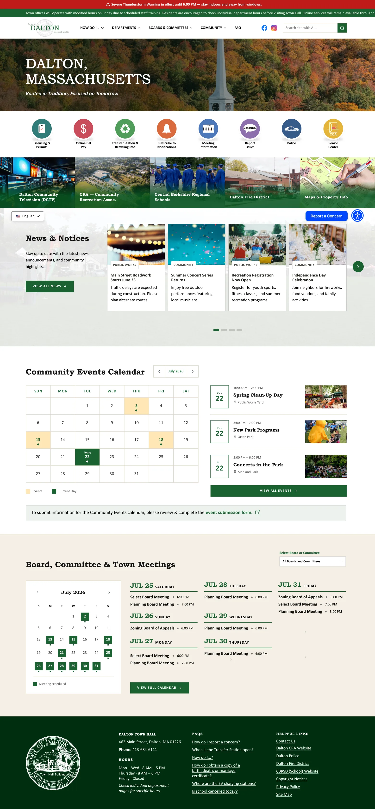

Dalton, Massachusetts
A custom municipal website shaped by accessibility, multiple design directions and the realities of public-sector information.
RoleSole designer
ScopeUX/UI · Responsive · Accessibility
OutcomeCommittee approved

THE PROJECT
More than a homepage refresh.
Dalton was an RFP / win-back project, so the work had to establish confidence quickly. I developed three distinct visual directions, then carried the selected direction through responsive homepage and department-page design, components, revisions and implementation support.

ACCESSIBILITY
Designed in, not checked later.
Accessibility was treated as a real project requirement. That affected hierarchy, persistent text, interaction states, keyboard focus and how information-heavy municipal content was presented.
Three directions → selected system → responsive pages → committee approval.